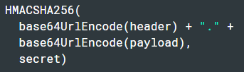
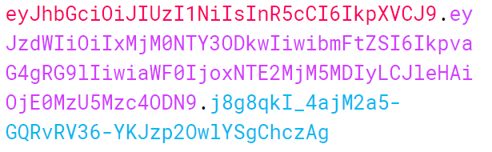
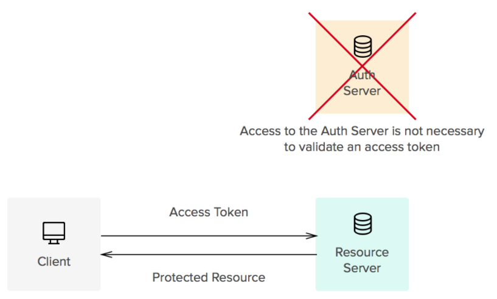
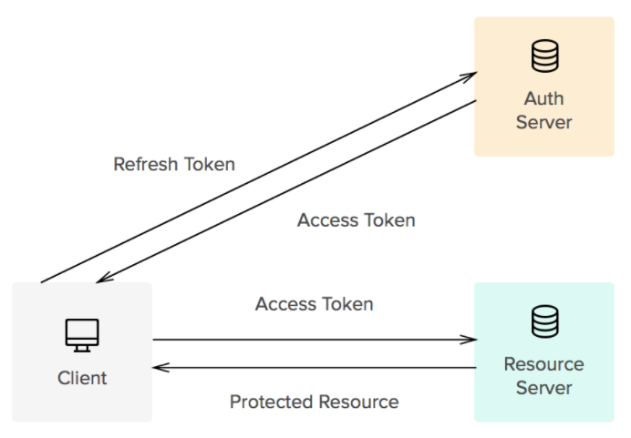
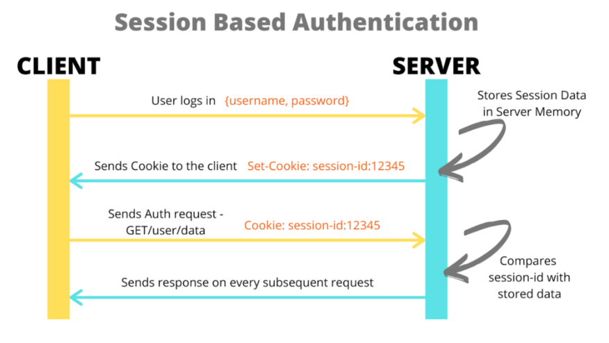

JWT (JSON Web Tokens)
Authentication & Authorization

What is JSON Web Token?
JSON web token (JWT), pronounced "jot", is an open standard (RFC 7519) that defines a way for securely transmitting information between parties as a JSON object.
What is the structure of JWT?
JSON Web Token consists of 3 parts seprated by dots:
- Header
- Payload
- Signature
Header
The header typically consists of two parts: the type of the token, which is JWT, and the signing algorithm.
{
"alg": "HS256",
"typ": "JWT"
}
Payload
The second part of the token is the payload, which contains the claims that represent additional data.
{
"sub": "1234567890",
"name": "John Doe",
"iat": 1457454340,
"exp": 1457450740,
"admin": false
}
!Notice that this information is readable by anyone. Do not put secret information in the payload or header elements of a JWT unless it is encrypted
Signature
To create the signature part you have to take the encoded header, the encoded payload, a secret, the algorithm specified in the header, and sign that.
Encoded Token
Finally, token should look like this:
In case you want to try creating your own JWT token you can visit jwt.io debugger.
Access Token
Access token is used to get access to the resource directly. They usually have short expiration time.
Refresh Token
Refresh token provides the opportunity to get a new access token. It is used to create new access tokens after old ones have expired, or getting access to a new resource for the first time.
Access token <=30 minutes, refresh token - up to several months.
How to store tokens?
- Access tokens should be stored in application memory.
- Refresh tokens should however be stored in cookies with an httpOnly flag that prevents client-side scripts from accessing the data it contains.
Here's an example how to set httpOnly cookie using Express framework in Node.js.
res.cookie('refreshToken', refreshToken, { httpOnly: true });
Login process
- User logs in the application passing login/password & browser's fingerprint.
- Server verifies login/password.
- In case of success server creates session and stores it in the database.
- Creates access token.
- Server sends both access and refresh tokens to the client.
- Client saves tokens in appropriate way: access token - in app memory, refresh token - in cookies.
Refresh process
- Client checks whether lifetime of an access token expired or not.
- When lifetime is over client makes a request to refresh the token passing such data as browser's fingerprint and refresh token.
- Server gets the refresh session record with the help of refresh token.
- Server saves current refresh session to the variable and deletes it from the database table.
- Server checks current session for lifetime and fingerprint.
- If it fails throws an error (like this: TOKEN_EXPIRED/INVALID_REFRESH_SESSION)
- In case of success server creates new refresh-session and saves it to the database.
- Server creates access token.
- Server sends access and refresh tokens to the client.
Important to note: when refreshing access token both access and refresh tokens should be updated.
What happens when tokens got stolen?
- A hacker uses access token.
- After a period of time this token's lifetime expired.
- The hacker sends refresh token and fingerprint.
- Server cannot find hacker's fingerprint in refresh session and deletes this session from DB.
- Server redirects user (hacker in our case) to login page, but hacker has no login or password.
- In such situation real user will be also redirected, but there's no problem, because user knows both login and password.
JWT vs Cookie Sessions
In Cookie Sessions the server is responsible for the authentication and the client does not know what happens at the server side after sending a request.
Advantages of JWT
- There's no need to ask for information in DB on every request.
- Native mobile support of JWT
- Ability to work with microservices.
Disadvantages of JWT
- Token can be easily decoded.
- Token is pretty big and works slower than traditional session.